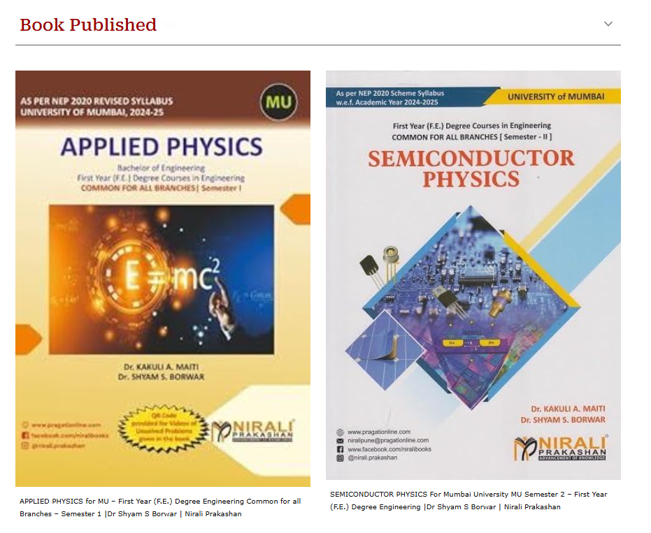
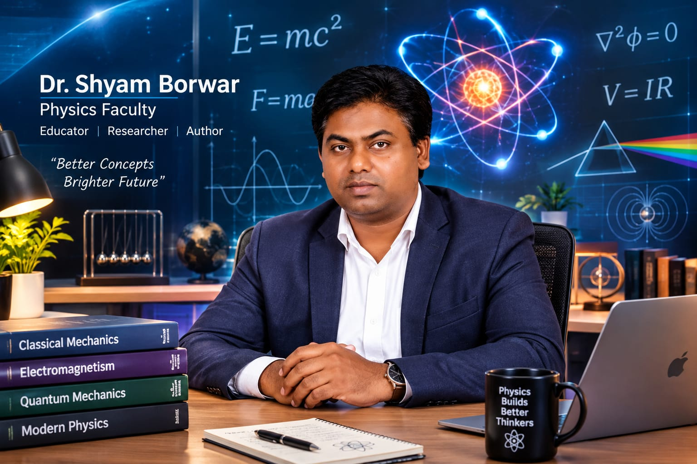

SEMESTER 1 · FIRST YEAR ENGINEERING
Applied Physics for MU
First Year (F.E.) Degree Engineering, common for all branches · Semester 1
Nirali PrakashanEducator · Researcher · Author
Helping learners connect physics fundamentals with practical laboratory work, materials science and research.
Ask about the faculty
Two first-year engineering physics textbooks published by Nirali Prakashan for the University of Mumbai syllabus.

First Year (F.E.) Degree Engineering, common for all branches · Semester 1
Nirali PrakashanMumbai University First Year (F.E.) Degree Engineering · Semester 2
Nirali PrakashanThe supplied faculty profile describes two decades of graduate and postgraduate teaching across science, engineering and technology organizations, alongside work in material science and supercapacitors.
General physics, electronics and electronic devices, with concepts explained in ways that meet students at their current level.
Material science, supercapacitors, nanotechnology, materials preparation, sensors, and functional-material characterization and manufacturing design.
Laboratory equipment and instrumentation, semiconductor and laser-based lab setup, environmental safety, and sensor and electronic-component materials.
The technical profile includes expert use of computer applications for education and research, XRD, SEM, EDS, FTIR and sensing terminals.
Institute of Science, Dr. Homi Bhabha State University, Mumbai / Sant Gadge Baba Amravati University, Amravati
University of Hyderabad, Hyderabad
Alagappa University, Karaikudi
Government Vidarbha Institute of Science and Humanities / Sant Gadge Baba Amravati University, Amravati